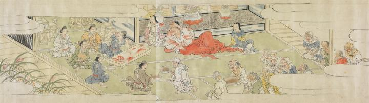

頼光一行と酒天童子たちとの酒宴。頼光たちはわざと人肉を喰らい、酒盃を受け、鬼たちを油断させようとしている。
出典：親書誌：U426_nichibunken_0079：酒天童子絵巻；シュテンドウジエマキ／日付：2006／資源識別子：U426_nichibunken_0079_0004_0000
Copyright (c)2010- International Research Center for Japanese Studies, Kyoto, Japan. All rights reserved.